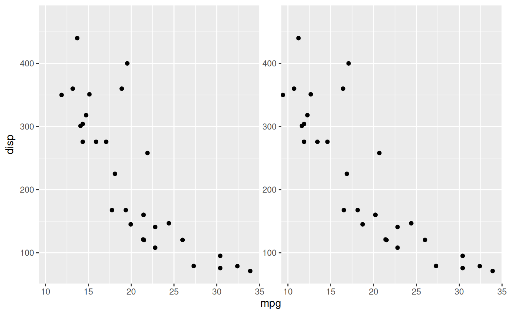

This, arguably pretty useless function, lets you create plots with a sense of
depth by creating two slightly different versions of the plot that
corresponds to how the eyes would see it if the plot was 3 dimensional. To
experience the effect look at the plots through 3D hardware such as Google
Cardboard or by relaxing the eyes and focusing into the distance. The
depth of a point is calculated for layers having a depth aesthetic supplied.
The scaling of the depth can be controlled with scale_depth() as
you would control any aesthetic. Negative values will result in features
placed behind the paper plane, while positive values will result in
features hovering in front of the paper. While features within each layer is
sorted so those closest to you are plotted on top of those more distant, this
cannot be done between layers. Thus, layers are always plotted on top of
each others, even if the features in one layer lies behind features in a
layer behind it. The depth experience is inaccurate and should not be used
for conveying important data. Regard this more as a party-trick...
Arguments
- IPD
The interpupillary distance (in mm) used for calculating point displacement. The default value is an average of both genders
- panel.size
The final plot size in mm. As IPD this is used to calculate point displacement. Don't take this value too literal but experiment until you get a nice effect. Lower values gives higher displacement and thus require the plots to be observed from a closer distance
- shrink
If
TRUE, will shrink scales to fit output of statistics, not raw data. IfFALSE, will be range of raw data before statistical summary.
See also
Other ggforce facets:
facet_grid_paginate(),
facet_wrap_paginate(),
facet_zoom()
Examples
# You'll have to accept a warning about depth being an unknown aesthetic
ggplot(mtcars) +
geom_point(aes(mpg, disp, depth = cyl)) +
facet_stereo()
#> Warning: Ignoring unknown aesthetics: depth
#> Warning: The `scale_name` argument of `continuous_scale()` is deprecated as of ggplot2
#> 3.5.0.
